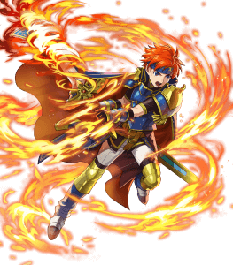

Though they all may be differnt charcters you see consistecny in the coloring, details, and facial expressions,
I like to draw, I like to practice martial arts, I love creating comics and working on my manga ideas. I tend to study coloring styles from other artists like Wada Sachiko or Meka or other well known japanese artists
Its a tad silly I know but ive always admired every little detail in Sachikos style
Though they all may be differnt charcters you see consistecny in the coloring, details, and facial expressions,

With Mekas style I love how she puts more emphasis on the perspective of the fighter and how much she pushes the law of anatomy
along with how much she knows about human anatomy, she really shows us just how talented she is

Though my all time favorite artwork of hers would have to be Legendary Roy since I do have a soft spot for him
